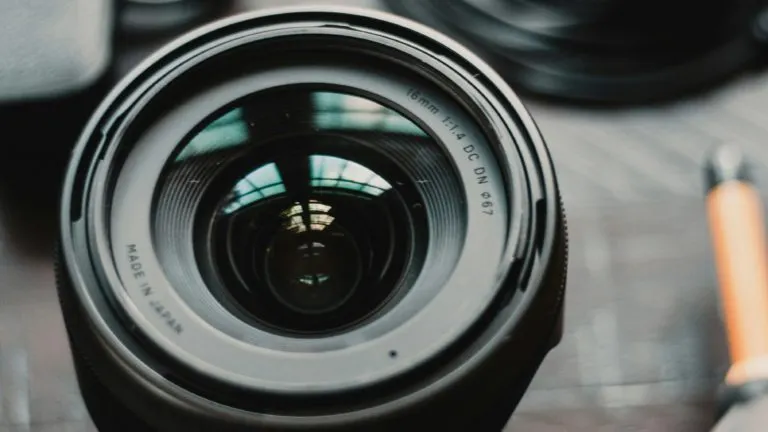

Fotografía nocturna
Ajustes para conseguir cielos limpios y estrellas nítidas
TécnicaDebates, consejos y equipo con otros fotógrafos
Ajustes para conseguir cielos limpios y estrellas nítidas
TécnicaLuminoso full-frame a buen precio, ¿cuál elegir?
GeneralSube tu primera película revelada y comparte la experiencia
GeneralIluminación, composición y más

Cámaras, objetivos y accesorios
Película y cámaras clásicas